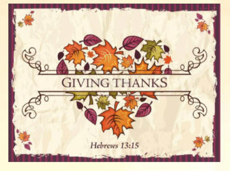
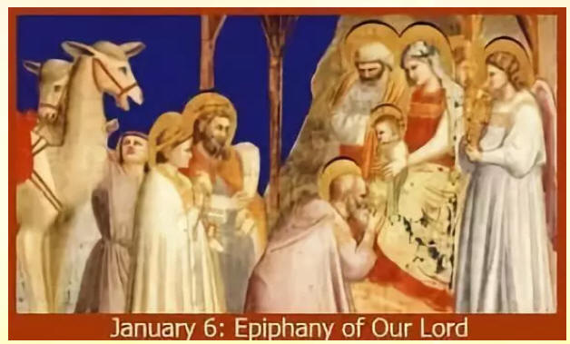
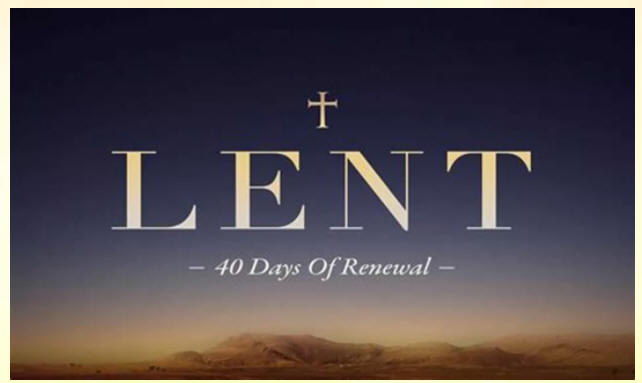
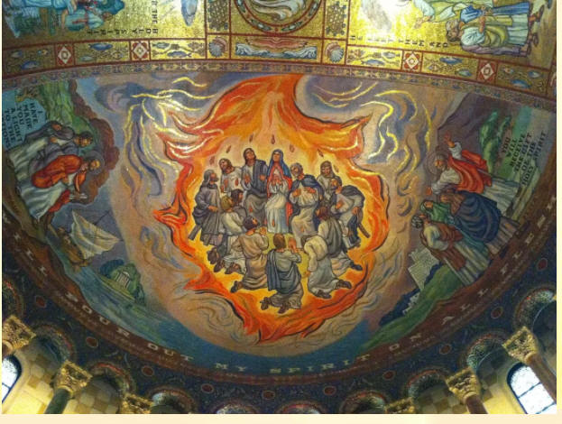
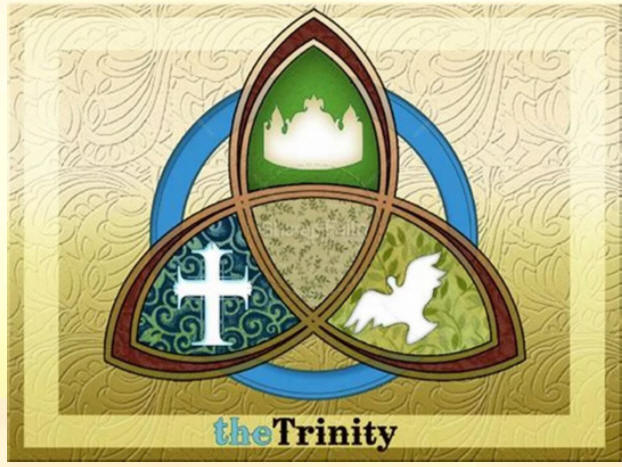

圣乐与崇拜工作者是先知，因为崇拜催使崇拜的人成熟，不是引他走向幼稚，故此你要「深化」崇拜。
圣乐与崇拜工作者是君尊，在崇拜中建立秩序、文化、传统与崇敬，因而你要「公化」崇拜，使全世界属上帝的子民都在「独一」、「圣洁」、「普世性」的「使徒教会」(One，Holy，Universal and Apostolic Church)中向祂献上最高的赞颂。
——罗炳良
我的上帝：荫庇我！
我的上帝：牧养我！
我的上帝：坚强我！
无论在何处，与我同行。
-----凯尔特(Celtic)传统祷文
谈到基督徒的崇拜，一般可在三个领域中讨论：崇拜的态度、内容与形式。讨论这三方面的学问称为崇拜学，此乃教牧及圣乐工作者必须严肃面对及学习的学科。
[1] 新约神学论到基督徒的崇拜态度，核心在乎心灵和诚实。
[2] 主流的崇拜神学主张基督徒的崇拜内容在乎「道成肉身」。由第一世纪直至近代，道成肉身的崇拜内容分成两部分，第一部分是「圣道」礼仪，环绕道的化身与了解，就是圣经的诵读与演绎。第二部分是「圣餐」礼仪，环绕道成肉身的基督，彰显在聚会中，被尊崇，被记念，以及上帝与人以基督的宝血立约。两部分都是着重以基督[就是道]为中心的崇拜。
[3] 崇拜的形式在华人教会较受忽视，但它同样有教牧作用。形式的外在构造包含礼仪、祷文、动作、表征等等。形式的内在结构就包含礼拜神学，教会年等等。
以下将会集中思想教会年重要的节期：
Advent：将临期在圣诞前四星期，教会提醒信徒预备迎接弥赛亚降临，好像旧约以色列人在两约之间，水深火热之际，等候基督来临一样。新约教会带领信徒进入将临期，除了重温其历史意义外，也同时再思其预言意义，就是仰望耶稣第二次带着权柄再来。信徒的属灵准备应如箭在弦，又如新娘在化妆间等侯新郎坐花车前来迎娶般整装待发，热切期待。信徒也应该纪念施洗约翰、马利亚、约瑟、撒迦利亚及预言基督降临的众先知。
Christmas：在这十二天，信徒欢呼庆祝上帝介入人类的历史。万军之耶和华霎时间受诸般的限制，不能说话，在襁褓中动弹不得，思维变成初生婴孩。从此，创世以来的应许得以实现，人类得救的盼望逐步实现，救恩由选民延伸到万族亦得以实现，万物叹息等待上帝的众子出现也必定实现。故此，圣经形容上帝进入人类历史为「敬虔的奥秘」。

Epiphany：显现期由主历一月六日开始，节期约四至九个礼拜，重点在于「显示」(manifestation)，信徒应该从四福音所载基督的事迹学习，切身处地去想想：如果你活在耶稣的年代，你会如何跟随耶稣？耶稣绝不妥协的信息、革命性的要求、惊世的自承与充满智慧的言论，你会如何面对？

Lent：大斋期是在「圣灰周三」(Ash Wednesday)后的三十三天内。历代教会的水礼大多数安排在复活节礼拜中举行，故此大斋期的重点在预备新的信徒。对于其它基督徒而言，大斋期则提供四十天忏悔、默想、立志的日子。这是象征以色列人进入应许地之前四十年飘流旷野的那段日子；也象征耶稣四十天受试探，得胜了然后再上路的经历。在大斋期间，信徒应该为自己灵性清理旧账，发掘隐而未现的恶习，修补人际关系，对付惰性，清楚处理一切的罪恶。
Passion：与主一同度过最后的一个礼拜，对信徒的意义无可置疑。棕树主日、濯足日[耶稣设立圣餐的晚上]、受难日与礼拜六的守夜，应该给予信徒深刻且震撼的影响。教牧与圣乐工作者若有机会的话，应该参加厚礼仪宗派在圣周的活动，尤其礼拜六的守夜，参与者必会深深领略旧约节期的教育意义和新约教会年的神学基础。在这段日子，信徒应该减少甚至完全不参与社交活动，纪念耶稣以宝血作为我们与上帝立约的保证。
Resurrection：由基督复活至五旬节来临[五十天]，教会庆祝复活期。除了欢呼庆祝，应该确信基督徒注定可以战胜一切。正如神学家汴诺(C．H．Pinnock)所说：「复活是历史的一个事实，拿走此事实，历史就无意义。」以马忤斯的路，正如你我人生的路，是孤单、失望的；是复活的主把真道、火热、属灵的认知眼光，和耶稣的同在放在你我人生的路上。

Pentecost：五旬节不是只谈恩赐、权能、感动、神迹及雀跃的节期；我们更应该谈圣灵的果子，尤应注意圣灵是三位一体有位格的真神，我们敬拜及听从的对象。圣灵不是呼之则来，挥之则去服从于我们的帮手。祂是上帝放在信徒心里，证明我们是上帝的儿女的那一位，祂成全了人类与真神最高档的接触。

Trinity Sundays：[约十至十四个礼拜]教会年没有在五旬节日终结。在第四世纪左右，由五旬节日直至将临节期间称为「五旬节」。又因教会年着重圣子与圣灵，有些传统就把五旬节改成「三一主日群」。让信徒可以每天活在三一上主的荫庇之下，使每天都是信仰生活，宗教生活。
Reformation Sunday：教会年除了节期以外，还有不少节日及圣日。笔者只谈一个特别主日，就是宗教改革日。教会以至个人，虽然活在恩典中，若不留神，撒但也随时可以把我们蒙蔽，以致失脚。马丁路得改教日，就是十月最后一个主日，提醒我们上帝对教会的怜悯。无论是神学家、主教、总干事、圣品、平信徒，都要作守望者。尤其坚守马丁路得所坚持的几个重要真理：因信称义、唯上帝的道至尊、信徒皆祭司、圣诗乃信徒嘴唇的祭，等等。
Kingdom Sundays：[约六至九个礼拜]因为三一主日群成为教会年最长的节期，近世有教会把三一主日群后半称为国度主日群，特别让信徒想到上帝地上的国度，就是教会。著名的基督教学院惠顿大学(Wheaton
College)的校训是「为基督和祂的国度」(For Christ and His
Kingdom)，正是国度节期要提醒信徒每天生存的目的：「为基督，为国度！」
今天砺思小品之讨论
上帝为什么在旧约中为以色列民定下节期？你以为新约教会定立教会节期可以根据的是什么？如果教会的布置、旗帜、颜色、礼袍、读经、圣诗、祷文与讲道都和教会年有关，而全世界教会都采用同一教会年历，你认为对教会有什么益处?
I will place no value on anything I have or may possess except in relation to the Kingdom of Christ．
-----David Livingstone
除非我所拥有的或将要拥有的与基督的国度相关连，否则那些东西对我就没有任何价值。
-----李文斯敦